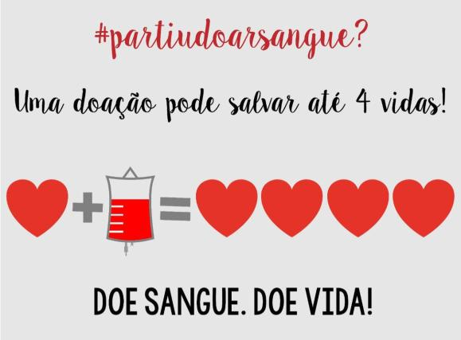

- ter idades entre 16 e 69 anos;
- Peso superior a 50kg;
- Boas condições de saúde;
- Não estar em jejum;
- Portar documento oficial original com foto(carteira de identidade, carteira de habilitação, carteira de trabalho ou passaporte);
- Não ter realizado vacinação contra influenza(gripe) nas últimas 48 horas;
- Última doação há mais de 90 dias para mulheres e mais de 60 dias para homens;
- Não estar grávida ou amamentando
- Não ter feito uso de bebida alcoólica nas últimas 12 horas
- Não ter feito tatuagem ou maquiagem definitiva há menos de 12 meses;
- Após o almoço ou jantar pede-se um intervalo de 3 horas para iniciar a doação
Como funciona a doação de sangue?

Procedimento
O processo de doação de sangue dura, em média de quarenta minutos a uma hora. Nele é feito cadastro, aferição de sinais vitais, teste de anemia, triagem clinica, coleta do sangue. O voluntário também recebe um lanche e atestado médico após a doação.
Uma pessoa adulta tem, em média, cinco litros de sangue em seu organismo. Em cada doação, podem ser coletados entre 420ml e 470ml de sangue, além de 25ml a 30ml para os exames laboratotiais. Essa doação pode salvar até 4 vidas

É recomendado evitar alimentos gordurosos nas quatro horas que antecedem a doação e, no caso de bebidas alcoólicas, 12 horas antes. Se a pessoa estiver com gripe ou resfriado, não deve doar temporariamente. Mesmo que tenha se recuperado, deve aguardar uma semana para que esteja novamente apta à doação.